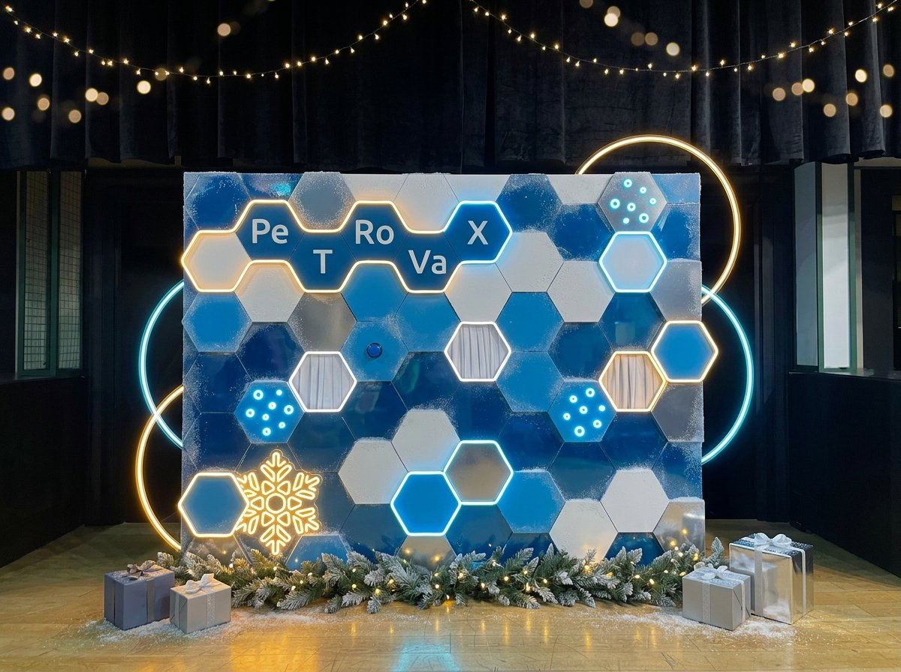
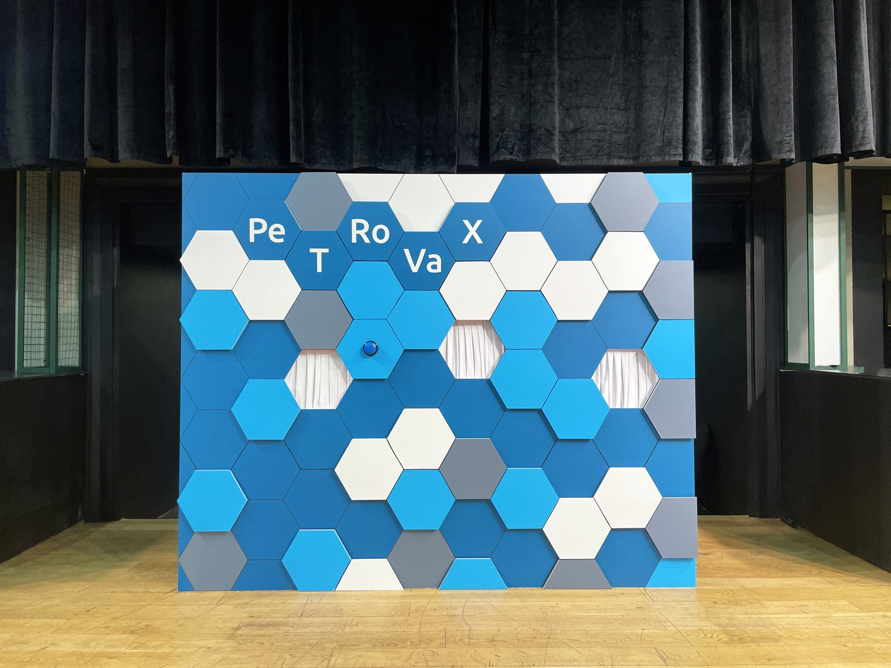

Гексагональная бренд-стена PeTRoVax
СделалиПанели в ледяной синий, морозный белый и хром, иней по кромкам, гибкий неон по контурам сот (тёплое золото + холодный лёд), неоновые снежинки внутри ячеек и два кольца-арки за стеной.
ДобавилиЕловую гирлянду с тёплым светом по низу, подарочные боксы, гирлянду-брошь вверху кадра.
гибкий неон по контурунеоновые фигурыинейгирлянда